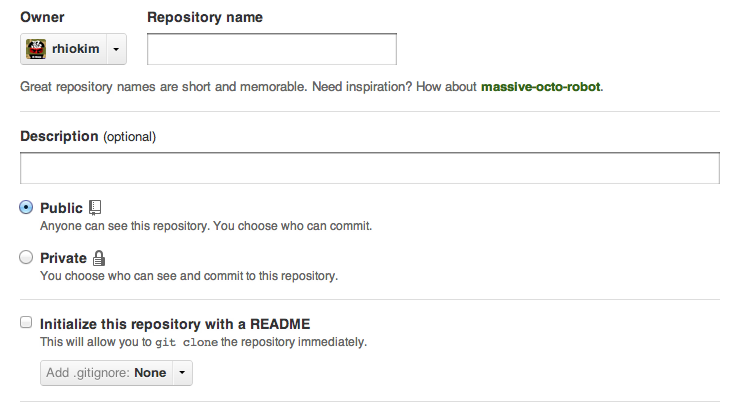
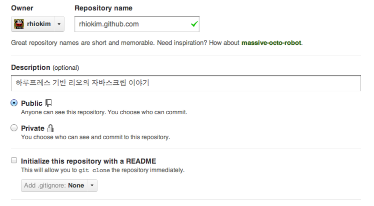

Rhio Kim
blog: http://rhio.tistory.com
twitter: @rhiokim
github: rhiokim
자바스크립트를 좋아하는 인간입니다.
하루프레스로 작성된 블로그는 다른 블로그 엔진과는 다르게 로컬 PC 에서 작성되기 때문에 배포의 과정이 별도로 필요합니다. 하지만 그 과정이 복잡하거나 어렵지 않습니다.
github 에 접속한다.
본인의 계정으로 로그인 한 후 새로운 저장소를 생성한다. 
Repository name 에는 본인의 github.com 계정 아이디를 입력합니다. 예시) 'rhiokim.github.com'
Description 은 저장소를 설명을 간단히 작성하면 됩니다. 예시) 하루프레스 기반 리오의 자바스크립트 이야기

위와 같이 저장소가 생성되었다면 이젠 블로그를 배포해봅니다.
이 과정은 make init 즉 하루프레스 설치과정에서 지정할 수 있지만 설정하지 않고 넘긴 경우에만 해당합니다.
… 하루프레스 설치과정
haroo> Enter the read/write url for your repository: [저장소 경로]
…
만약 설치 과정에서 입력하지 않았거나 위치를 변경하고 싶다면 다음과 같이 할 수 있습니다.
$ cd /path/to/haroopress/
$ make gh-pages
haroo> Enter the read/write url for your repository:
저장소를 입력하고 엔터를 치면 하루프레스는 생성된 블로그를 해당 저장소로 배포할 수 있도록 설정을 합니다.
위의 설정이 잘 되었다면 배포는 그야 말로 간단하다. make deploy 명령어를 실행하면 위에서 지정한 저장소로 자동 배포되고 Github.com 에는 길게는 10분 짧게는 배포 완료 후 바로 확인할 수 있다.
$ cd /path/to/aaa.mysite.com
$ make gen
haroo> …
haroo> generating log
haroo> …
$ make deploy
…
haroo> Resources copy to Deploy directory
haroo> git add .¶
haroo> git add -u¶
haroo> git commit -m ¶
haroo> git push origin master --force¶
// 내용이 많은 경우에 따라 다소 시간이 걸림
haroo> completed http://yours.github.com
haroo> open http://yours.github.com ? [y/n]
haroopress deploy guide from rhiokim on Vimeo.